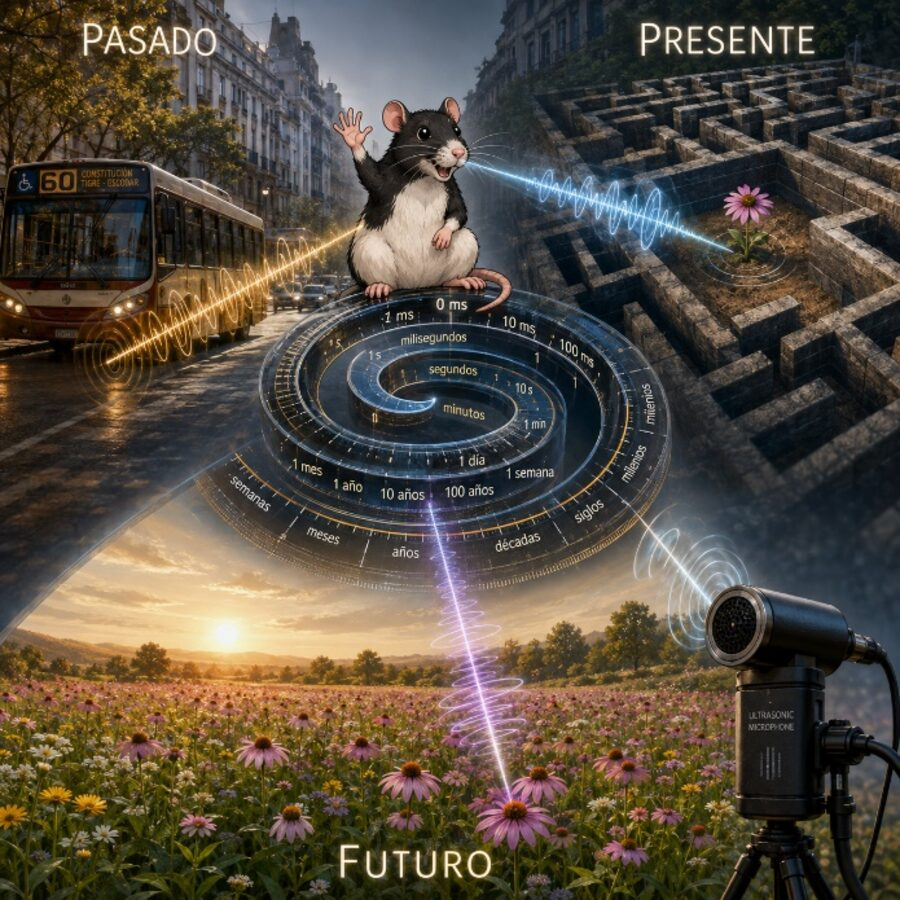
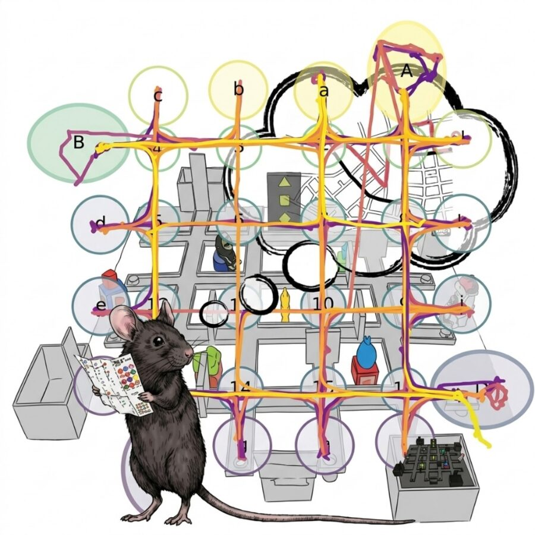

NN
Nombre Apellido
Directora del laboratorioLab Director
Redes de Información Biológica en Acción Biological Information Networks in Action
Investigamos la dinámica de las señales internas y externas que emergen de las interacciones dentro del cerebro, del organismo y con su entorno, y cómo estas señales orientan a los mamíferos en el espacio terrestre, aéreo y cognitivo. We investigate the dynamics of internal and external signals that emerge from interactions within the brain, the organism, and its environment, and how these signals guide mammals across terrestrial, aerial, and cognitive spaces.
La información en los seres vivos es un código dinámico que emerge de las interacciones dentro de los sistemas biológicos y entre estos y su entorno. Se transforma continuamente a través de la actividad, modificando así las condiciones para la acción posterior. Information in living beings is a dynamic code that emerges from interactions within and between biological systems and their environment. It continuously transforms through activity, thereby modifying the conditions for subsequent action.
RIBio: curso de doctorado gratuito en ITBA que desarrolla este marco conceptual. RIBio: a free doctoral course at ITBA built on this conceptual framework.
Conocé el curso →Learn about the course →
Las ratas se comunican con sonidos por encima de lo que el oído humano puede percibir. Estudiamos qué nos dicen esas vocalizaciones sobre cómo se forman, se evocan y se transforman las memorias. Rats communicate with sounds above the range of human hearing. We study what these vocalizations reveal about how memories are formed, retrieved, and transformed.
Ver proyecto →View project →Cómo el cerebro estima la propia posición a partir del movimiento y qué ocurre cuando esas señales internas entran en conflicto, como en el vuelo. How the brain estimates its own position from self-motion, and what happens when those internal signals conflict, as in flight.
Ver proyecto →View project →
Trayectorias, decisiones y estrategias: cómo los animales exploran y aprenden a moverse de forma eficiente en entornos complejos. Trajectories, decisions, and strategies: how animals explore and learn to move efficiently through complex environments.
Ver proyecto →View project →Contenido de ejemplo: reemplazar con foto, nombre, rol, red profesional y línea de investigación de cada integrante. Sample content: replace with each member's photo, name, role, professional profile, and research line.
Contenido de ejemplo: reemplazar con las publicaciones del laboratorio. Sample content: replace with the lab's publications.
Curso de doctorado gratuito sobre redes de información biológica en ITBA. Más información. Free doctoral course on biological information networks at ITBA. Learn more.
Breve descripción de la novedad.Short description of the update.